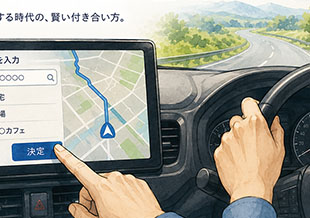
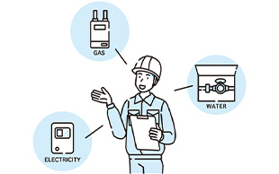

私たちの姿勢Philosophy
私たちは「伝わるサイト」を
構築する会社です
Webサイトはどんな目的で構築されるにせよ、何かの情報を伝えるための手段です。しかし、伝えようという意図と伝わったという結果は、なかなか一致しないのが現実。私たちは、クライアントのビジネス理解し、Webサイトのユーザである訪問者の視点に立つことで「伝わるサイト」を構築する会社です。
クライアントの立場で
幅広い専門性を発揮します
Webの構築では文章やデザインだけでなく、コンピュータシステム、マーケティング、サプライチェーンなどクライアント業務に関わるさまざまな専門知識を有機的に理解していることが求められます。不整合があればたちまちトラブルの原因にもなります。私たちはWebの構築に関する専門知識を持つだけでなく、クライアントの立場に立ったサービスを提供します。
ゴールへ導くノウハウと
ツールを提供します
目的を達成し成果を上げるためには、公開後も常に新鮮な情報を提供し、継続的に改善される仕組みが大切です。私たちは、独自のツールを提供し簡単で安全に更新できる仕組みを提供します。また、数多くのサイトを手がけた経験から獲得したノウハウで効率的な運用体制の構築を支援します。構築されたWebサイトが「伝わるサイト」として機能するよう、公開後の運用にもかかわっていきます。
サービスService
コンサルティング（コンセプト／コンテンツの企画設計）
ターゲットを理解し、ゴールを設定し、コンセプトを明確化することが大切です。コンサルティング段階で主要なコンテンツを企画し、ゴールまでの導線を検討し、全体像を関係者で共有します。
- Web戦略の作成とWebの役割 Webサイトを有効活用し、ビジネスの成果を上げる戦略を作ります。
- コンテンツの企画設計 現実の制約の中で、成果を上げるコンテンツをご提案します。
- システム環境や運用体制の設計 スムーズな運用が行えるよう、サーバ環境と体制を設計します。
構築（ビジュアルデザイン／コンテンツ編集／システム）
創りたいブランドイメージを意識し、クライアントにご提供いただく原稿や写真を整理・編集して、魅力的なコンテンツとして組み立てます。また、訪問者に利便性を提供するシステムを設計・開発します。
- ビジュアルデザイン 自社の強みや魅力をブランドイメージとして表現すると同時に、ビジュアルデザイン、レイアウト、インタフェースを作ります。
-
構築（コンテンツ制作／システム開発）
クライアントからお預かりした素材を編集して、Webサイトとして制作します。
サーバ環境の設定や、機能の開発を行います。 - 運用設計 ファイル・ディレクトリ管理方法や更新体制、更新ツールの導入などの運用を設計します。
運用（更新体制／ツール／コンテンツ拡充）
更新ツールを利用したスピーディーな更新、定期的なコンテンツの充実や特集企画の追加、アクセスログを分析してのサイトの改善を行います。
- ツールの提供 全体の約８割を占める定型的なページの更新作業を、お客様ご自身で行うことができます。ツールの操作方法や運用上の注意点についての研修も行います。
- 非定型な更新作業を担当 キャンペーンの告知など積極的に見せたいページ、デザインやレイアウトをひとつひとつ丁寧に制作したいページ、メニューの追加などWebサイトの構造に影響する更新を担当します。
- パワーアップの提案 コンテンツの充実に向けた新企画の提案、新機能への取り組み、全体のリニューアルなどをご提案します。
制作実績Works
コラムColumn


会社概要Company
- 社名
- 株式会社ウェブマスターズ
- 所在地
- 〒160-0022
東京都新宿区新宿2丁目12番13号
新宿アントレサロンビル2階 - 代表者
- 原島 洋
- 設立
- 2000年12月
（合資会社として登記し、2002年7月に株式会社化） - 資本金
- 1000万円
- 事業内容
- インターネット活用のコンサルティング
Webサイト構築を、企画から運用まで支援